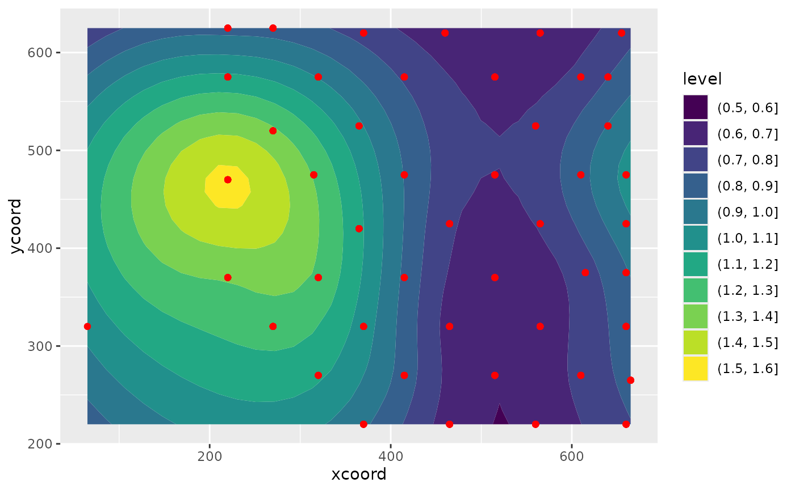
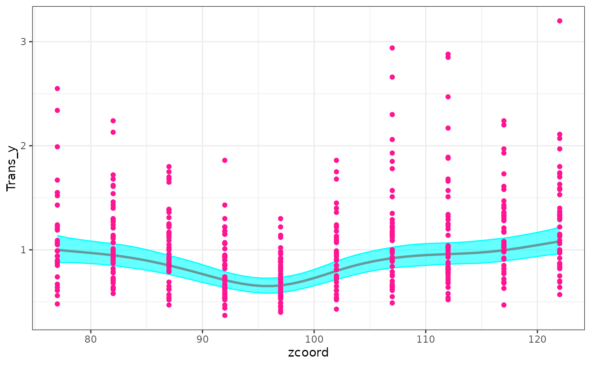

Copper grade at sampling points with their X, Y and Z coordinates within a designated area. Used in the overview article to fit a semiparametric model with a smooth in Z and a thin-plate spline in X and Y.
Format
A data frame with 439 rows and 4 columns:
- xcoord
X coordinate of the sampling point.
- ycoord
Y coordinate of the sampling point.
- zcoord
Z coordinate of the sampling point.
- grade
copper grade.
copperKnots: the 20 knots (columns xcoord, ycoord) of M. P. Wand's thin-plate spline
fit of these data (a geoadditive model fitted by lme()), which semireg reproduces.
Examples
data(copper)
data(copperKnots)
# M. P. Wand's geoadditive model: a thin-plate surface over the plane with the given knots,
# and an O'Sullivan spline in depth (their linear terms are added to the fixed effects)
mod <- semireg(grade ~ s(xcoord, ycoord, bs = "ztps", xt = list(knots = as.matrix(copperKnots))) +
s(zcoord, bs = "os", xt = list(knots = seq(80, 120, by = 5))), data = copper, prt = FALSE)
anova(mod) # fixed effects (Kenward-Roger) and a test of each smooth term
#> Analysis of Deviance Table (Type III Wald F tests with Kenward-Roger df)
#>
#> Response: grade
#> F Df Df.res Pr(>F)
#> (Intercept) 1.9416 1 9.89 0.19402
#> xcoord 2.0529 1 9.71 0.18332
#> ycoord 0.1194 1 9.33 0.73730
#> zcoord 5.3331 1 419.35 0.02141 *
#> ---
#> Signif. codes: 0 ‘***’ 0.001 ‘**’ 0.01 ‘*’ 0.05 ‘.’ 0.1 ‘ ’ 1
#>
#> Smooth terms: likelihood ratio tests of variance = 0 (the curve is its straight-line part);
#> reference: exact restricted LRT for the only random effect of a gaussian fit, otherwise 0.5 chi2(0) + 0.5 chi2(1)
#> term variance logLik logLik.without LRT p.value
#> s_xcoord_ycoord 1.74189 -207.2 -245.5 76.56 < 2e-16
#> s_zcoord 0.05986 -207.2 -234.1 53.72 1.15e-13
#> test
#> 0.5 chi2(0) + 0.5 chi2(1)
#> 0.5 chi2(0) + 0.5 chi2(1)
semipred(mod, covariate = c("xcoord", "ycoord"), prt = FALSE)$plt

# \donttest{
# on the log scale, with the pairwise interactions of the coordinates
mod2 <- semireg(log(grade) ~ s(zcoord, bs = "os") + s(xcoord, ycoord, bs = "ztps", k = 6) +
xcoord:ycoord + xcoord:zcoord + ycoord:zcoord, data = copper, prt = FALSE)
semipred(mod2, covariate = "zcoord", trans = exp, prt = FALSE)$plt

# }